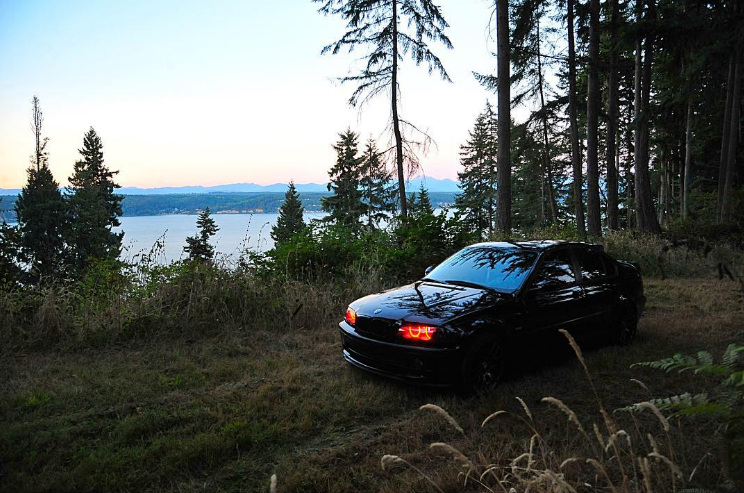
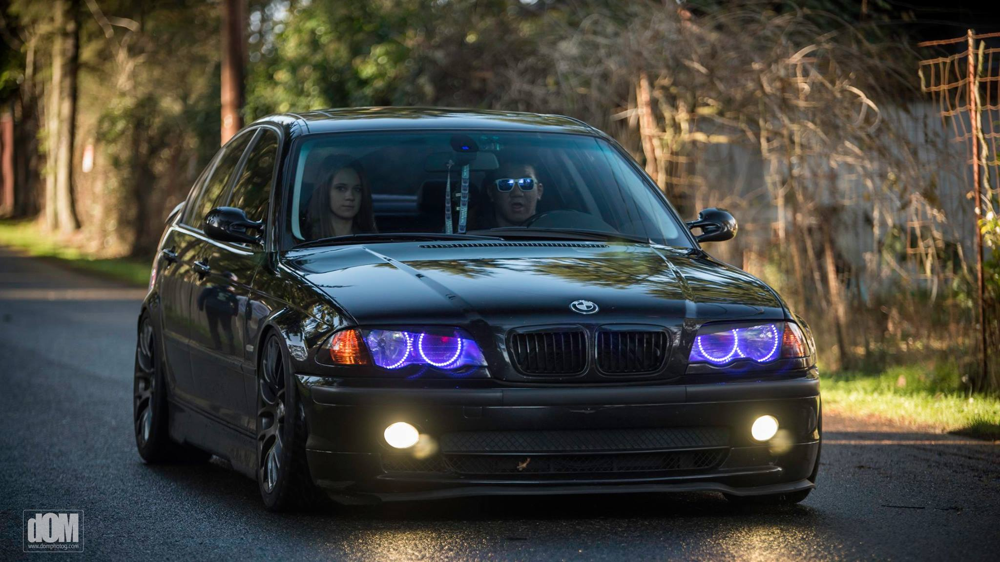
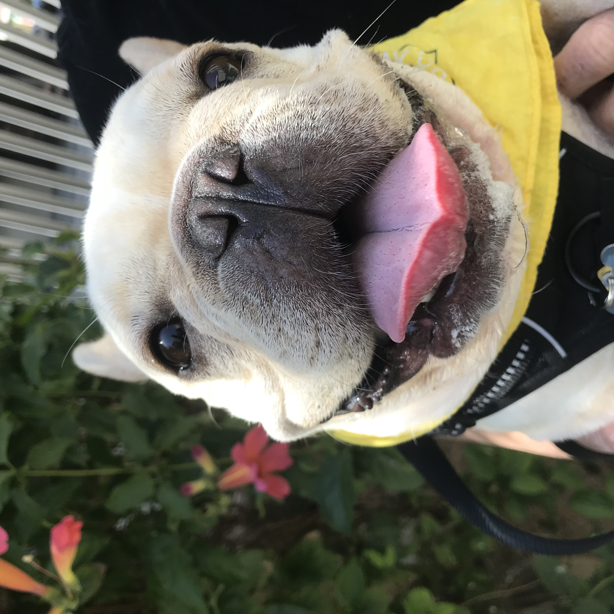
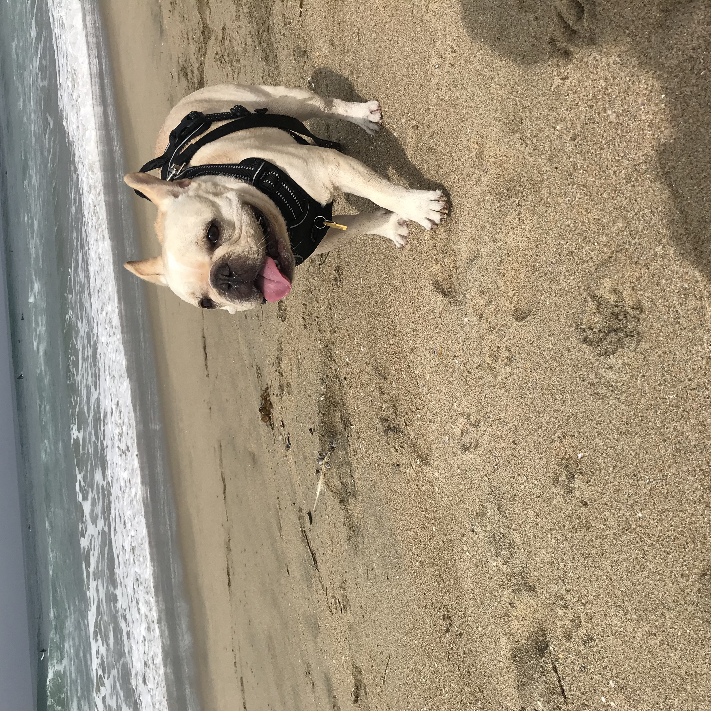
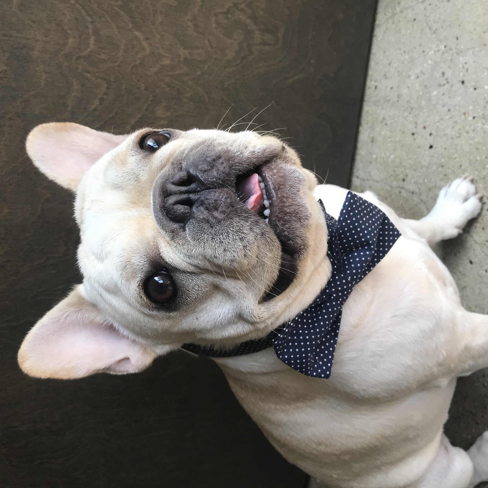

My Car Background
Growing up, I was always interested in motorized vehicles. I had been around bikes, dirtbikes, atv's, 4 wheelers, and anything that moved. So, it was inevitable that as soon I was old enough I started getting cars. My first car was a 1994 Toyota Camry and I made some tastefull modifications. I drove that car until it was no longer worth the money needed to fix it up and keep it on the road. My second car was a 2001 BMW 330i. This was when I had to learn all the ins and out of the car because it was just too expensive to being it to a shop everytime something went wrong. So, I watched a million Youtube videos to understand the car and to see how it works. I now do everything on my car by myself. This saves me so much money. I also maintain my girlfriend's car as well.
 My Dog
My whole life I have been allergy to animals. For this reason, my family has never had a cat or dog because my brother and I's allergics were so bad. But when I moved in with my girlfriend we always talked about getting a dog. She really wanted a French Bulldog because they are small and are a lap dog. At first, I was against getting a dog because at the time we both were going to school and my allergies would have been super bad. But one day, we were at the Grove Mall in Los Angeles and we saw a French Bulldog and it was my first time seeing one. I asked the owners if I could pet him and that movement changed my life forever. We caually looked for a white French Bulldog for months and we finally found one and we adapted him. He was 9 months old and perfect. My allergies were still horrible but after a week of suffering and taking allergy medicine, it just went away.
  